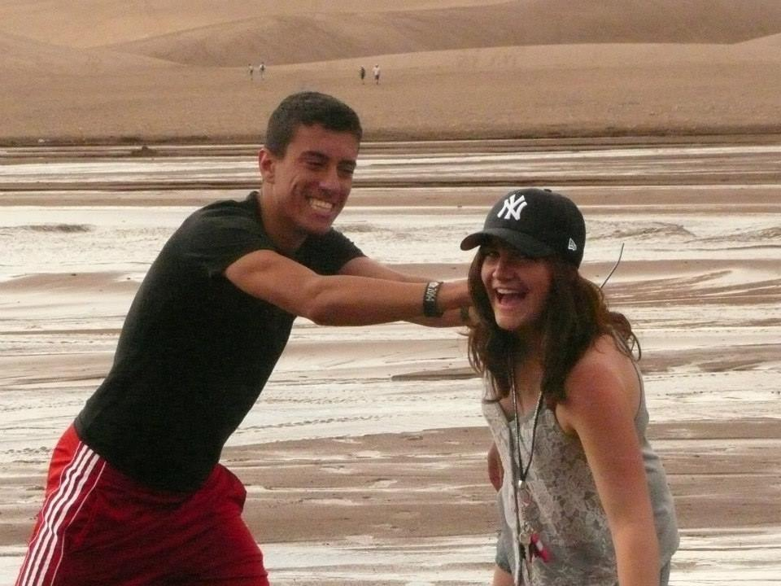
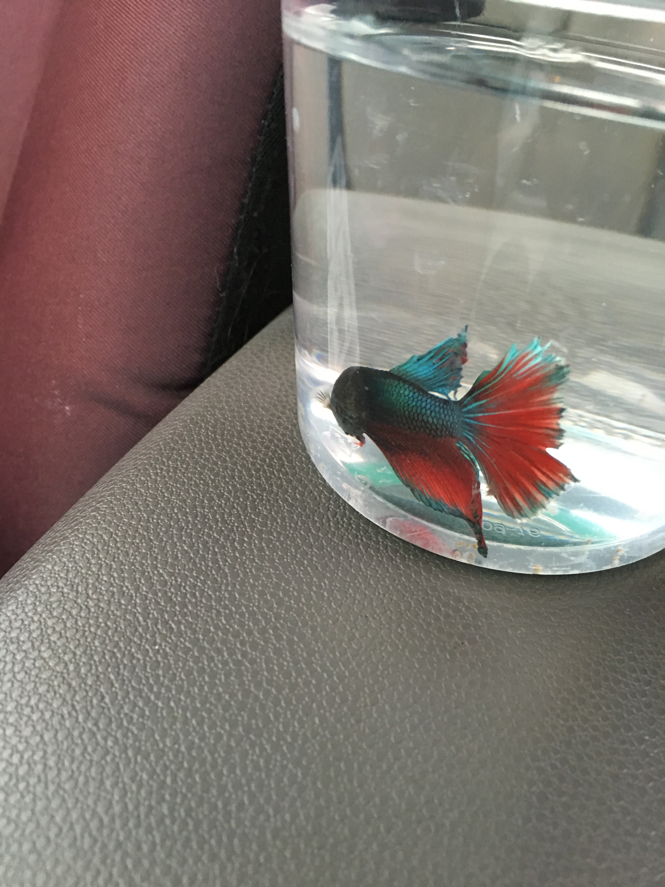

I love to travel, I have been all over the world. A few of my favorite places are listed on this website. Below are several images of my life.
About Kim
- Family
- School
- Fun Facts
- Index
Family
I have a pretty small family, I have
one older sister as well as my two parents.
We have also hosted several exchange students
while I was in high school.
Below is a picture of my and my "brother,"
Simone, who was one of our exhange students from Italy.

School
I attended a very small high school,
so I decided to also attend a pretty small college.
As you probably could guess,
I go to Regis University
and my major is Computer Science
with a minor in Pyschology!
I am currently a Junior
and will graduate in 2018.

Fun Facts
- I am from the highest incorperated city in North America
- I have had two fish, the one pictured below's name was Bubble07
- My favorite food is carrots, and I ate so many once my hands turned yellow.
- My favorite place in the world is in the meadows of Mount Massive.
- I have climbed 14 of Colorado's fourteeners
